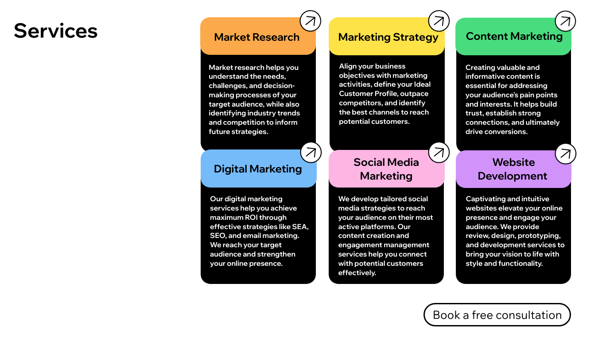
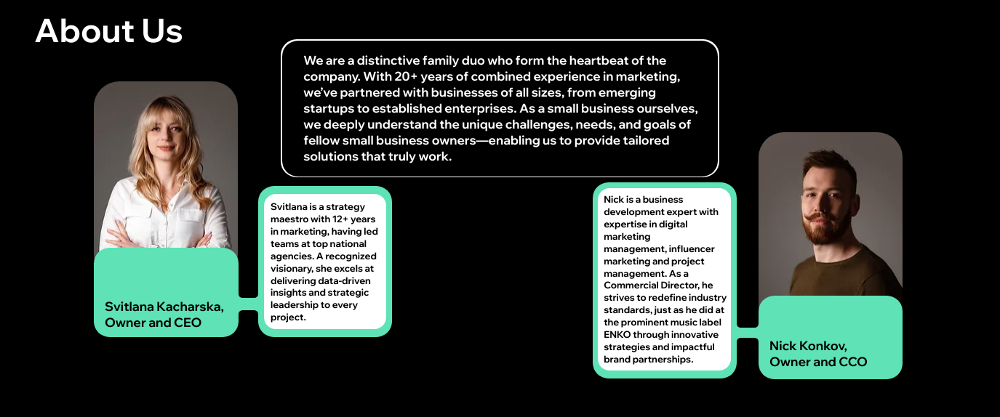
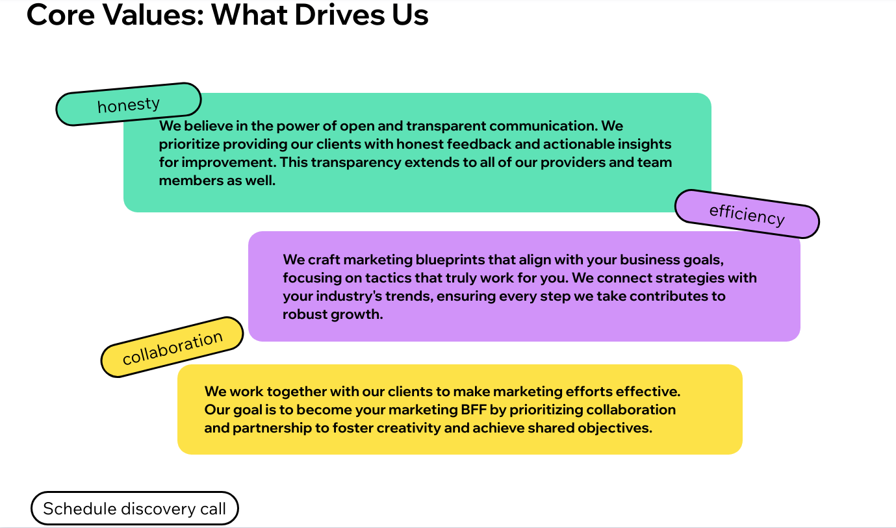

Muster Agency
Інформаційна архітектура, UX райтинг, контент для сайту
Muster Agency — американська маркетингова агенція, яка виконує роль Fractional CMO
для малих і середніх бізнесів на американському ринку в форматі місячної підписки на послуги.
В роботі над сайтом агенції я реалізувала повний цикл UX-копірайтингу, включаючи розробку
інформаційної архітектури, тексти для всіх сторінок та варіації ефективних CTA (Call-to-Action), орієнтованих на бізнес-цілі.
[ Головна ]
На головній сторінці я подала прямий та зрозумілий меседж у заголовку,
який чітко пояснює УТП (унікальну торгову пропозицію) послуг, а у підзаголовку коротко розкрила формат співпраці.
Щоб одразу залучити користувача, додала клікабельну галерею з прев’ю кейсів та
кнопку з CTA для стимулювання подальшої взаємодії та підписки на послуги. В хедері я розмістила навігаційні елементи з основними розділами
сайту в хронологічній послідовності, щоб користувачі могли легко знайти потрібну інформацію.

[ Другий екран ]
Тут я розташувала розділ з описом послуг, який одразу демонструє,
які саме больові точки бізнесу агенція допомагає вирішити.
В описі послуг акцентувала увагу на кінцевих результатах для клієнта, а не на внутрішніх процесах компанії.
Завершила блок сильним CTA, щоб конвертувати користувачів у лідів і потенційних клієнтів.

[ Секція про цінності ]
У наступних секціях я зосередилася на побудові довіри до компанії.
У розділі “Про нас” створила емоційний зв’язок з аудиторією через сімейну історію компанії та індивідуальні профайли засновників, де розкрила їхній професійний досвід та ключові досягнення.

На цьому етапі увага користувача вже розсіяна, тому секція з цінностями компанії
складається з невеликих абзаців, розташованих у візуальній ієрархії, щоб користувач міг легко просканувати текст.
Окремий розділ присвятила RTB (reason to believe) — ключовим аргументам на користь співпраці з агенцією.

Окремий розділ присвятила RTB (reason to believe) — ключовим аргументам на користь співпраці з агенцією.

[ Завершальні екрани ]
В кінці я розмістила кейси та відгуки клієнтів, демонструючи експертизу агенції через реальні проєкти.